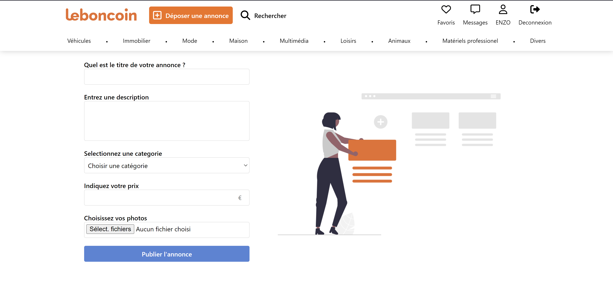
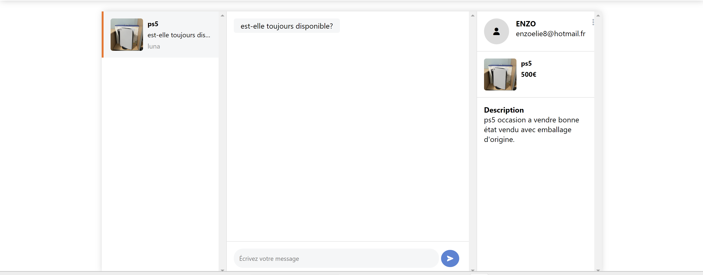
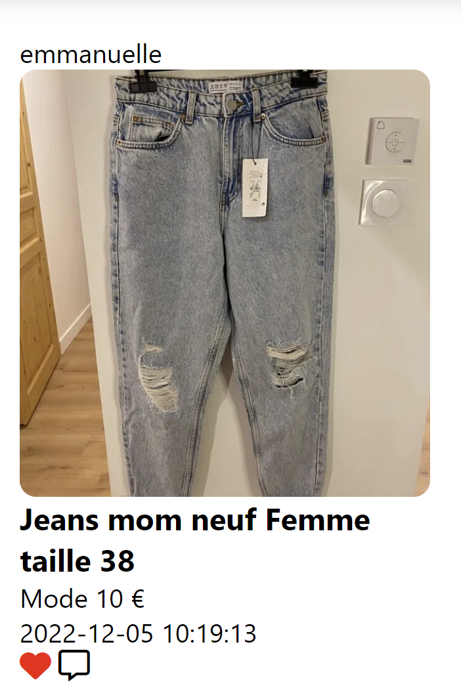
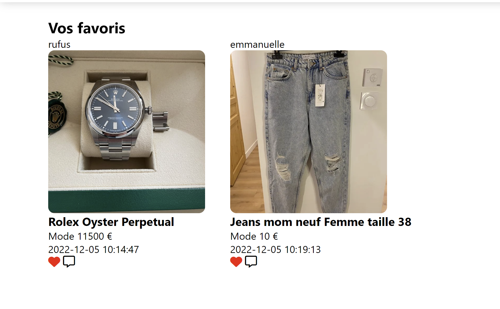

Au cours de la seconde année de formation nous avons eu à crée en groupe un clone d'un site célébre. Ce projet a pour objectif de reproduire les fonctionnalités essentielles du célèbre site de petites annonces en ligne.
En utilisant HTML, nous avons construit une structure solide pour le site, en organisant les différentes sections et en assurant une navigation fluide pour les utilisateurs. Le CSS a été utilisé pour styliser le site et lui donner un aspect visuel attrayant, en travaillant sur les couleurs, les typographies et les mises en page, pour qu'il soit le plus proche du site que nous clonons.

L'une des fonctionnalités principales du projet Leboncoin que nous avons développé est la possibilité pour les utilisateurs de déposer des annonces sur le site.
En utilisant le formulaire de dépôt d'annonce, les utilisateurs peuvent fournir les informations nécessaires pour décrire leur annonce de manière claire et précise. Le formulaire comprend des champs tels que le titre de l'annonce, la catégorie, la description, le prix, les photos.
Une fois que les utilisateurs ont rempli tous les champs requis et téléchargé les images correspondantes, ils peuvent soumettre leur annonce. Grâce à la fonctionnalité de traitement des formulaires en PHP, les informations saisies sont enregistrées dans la base de données et l'annonce devient immédiatement disponible sur le site pour consultation par les autres utilisateurs.
Nous avons ajouté une fonctionnalité permettant aux utilisateurs d'envoyer des messages privés aux autres utilisateurs concernant une annonce spécifique. Cette fonctionnalité favorise les interactions directes entre les utilisateurs intéressés par une annonce particulière.
Lorsqu'un utilisateur consulte une annonce sur le site, il a la possibilité d'envoyer un message privé au propriétaire de l'annonce pour poser des questions supplémentaires, négocier le prix ou convenir d'une rencontre pour finaliser la transaction.
Lorsqu'un utilisateur reçoit un message privé concernant son annonce, il est notifié via une notification dans son compte utilisateur ou par e-mail, selon les préférences définies. L'utilisateur peut ensuite accéder à sa boîte de réception et consulter les messages reçus, y répondre ou initier une conversation privée avec l'expéditeur du message.
Cette fonctionnalité d'envoi de messages privés sur une annonce favorise les échanges directs entre les utilisateurs, ce qui facilite les négociations, les clarifications et les arrangements pour conclure une transaction en toute sécurité.
La mise en place de cette fonctionnalité a nécessité la création de fonctionnalités PHP pour gérer les formulaires de message, le stockage et la récupération des messages dans la base de données, ainsi que la mise en place d'une interface utilisateur pour la gestion des messages.
Nous avons aussi ajouté une fonctionnalité permettant aux utilisateurs de mettre des annonces en favoris. Cette fonctionnalité offre aux utilisateurs la possibilité de sauvegarder et de retrouver facilement les annonces qui les intéressent le plus.
Lorsqu'un utilisateur consulte une annonce sur le site, il peut cliquer sur l'icone en forme de coeur pour enregistrer cette annonce dans sa liste de favoris. L'annonce est alors associée à son compte utilisateur, lui permettant de la retrouver ultérieurement sans avoir à la rechercher à nouveau.
elle leur permet de créer une liste personnalisée d'annonces qui les intéressent, facilitant ainsi leur gestion et leur accès ultérieur. Les utilisateurs peuvent ainsi suivre de près les annonces qui les intéressent le plus, sans avoir à les rechercher à chaque visite sur le site.
La mise en place de cette fonctionnalité a nécessité la création de fonctionnalités PHP pour associer les annonces aux comptes utilisateurs, stocker les informations de favoris dans la base de données et fournir une interface utilisateur intuitive pour la gestion des favoris.
La fonction de mise d'annonce en favoris est un ajout pratique qui améliore l'expérience utilisateur du projet Leboncoin en offrant une fonctionnalité de sauvegarde et de suivi des annonces préférées. Elle permet aux utilisateurs de garder un œil sur les annonces qui les intéressent le plus et de faciliter leurs recherches ultérieures.
La base de données du projet Leboncoin est un élément clé de l'architecture de la plateforme, permettant le stockage et la récupération des informations essentielles pour assurer le bon fonctionnement de la plateforme et offrir une expérience utilisateur fluide et conviviale.
La base de données du projet Leboncoin est mise à jour lors de l'ajout d'une nouvelle annonce, de la création d'un compte utilisateur, de la mise à jour des informations utilisateur et d'autres interactions sur la plateforme.
La conception soignée de la base de données assure une gestion efficace des données et permet une navigation fluide sur le site, en garantissant la récupération rapide des informations nécessaires pour répondre aux requêtes des utilisateurs.
En utilisant les langages de programmation appropriés, tels que PHP et MySQL, nous avons pu créer et interagir avec cette base de données, en garantissant sa cohérence et sa sécurité tout au long du projet.